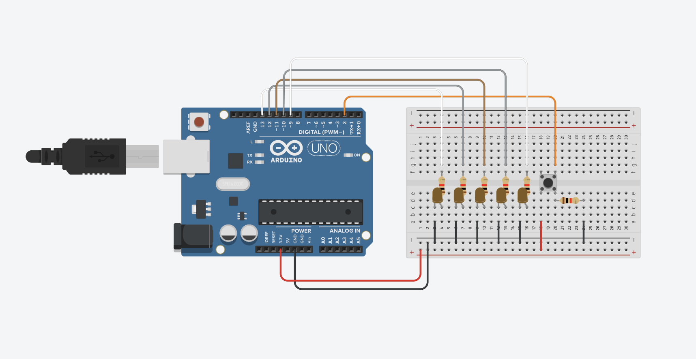

<div class="textcontainer">
<p class="margin"> </p>
<h3>Week 4: Microcontroller Programming</h3>
<p><br></p>
<h4>Do Something With An Arduino</h4>
This week, we were asked to program an Arduino board to do something.
<br>
I chose to create a LED-chaser effect display using a manual input.
Here is the final result:
<p><br></p>
<video class="center_image" width="640" height="360" controls>
<source src="week4_final.MOV" type="video/quicktime">
Your browser does not support the video tag.
</video>
<p><br></p>
I first tested it by running a schematic in TinkerCad (a browser-friendly way to
create and test circuits). You can look at it in TinkerCad <a href="https://www.tinkercad.com/things/kf47rsTs7wX-phys70-week-42">here</a>.
I used an Arduino IDE because that is all that was provided for microcontrollers. Here is the schematic and a simulated video.
<p><br></p>
<p></p>
<p><br></p>
<video class="center_image" width="640" height="360" controls>
<source src="TinkerCad_Schematic.mov" type="video/quicktime">
Your browser does not support the video tag.
</video>
<p><br></p>
Then, I moved onto its physical construction.
Here are the steps to build it. First, gather all of the following supplies:
<ol>
<li>5x LEDs</li>
<li>6x Resistors (1 k<span>&#8486;</span> works well)</li>
<li>Input Sensor (button works well)</li>
<li>Breadboard</li>
<li>ESP32 Microcontroller</li>
<li>Cable to connect computer to ESP32 for uploading code</li>
<li>15 wires (preferrably 7 black/GND, 2 red/power, and the others miscellaneous)</li>
</ol>
After grabbing these items, arrange them on the breadboard as such:
<p><br></p>
<div class="img-container">
<img src="setup_view1.HEIC">
<img src="setup_view3.HEIC">
</div>
<p><br></p>
Here is a zoomed-in picture of how I connected the pins to the board.
The left-most LED is connected to the inward-most pin (relative to the other pins).
The right-most LED is connected to the farthest-most pin (relative to the other pins).
<p><br></p>
<img class="center_image" src="setup_view2.HEIC" alt="Turtles">
<p><br></p>
Now, open up Arduino IDE and follow these steps:
<ol>
<li>Select board as 'ESP32 Dev Module' and port as 'serial' (this shows up when your cable is plugged into the computer)</li>
<li>On the left-hand tab, select 'Board manager' and find 'esp32' by Espressif. Go ahead and install.</li>
<li>Copy paste the following code into the Arduino IDE. </li>
<li>Once done, click 'File' and 'Upload' (or just click the arrow symbol) and let the code transfer to the ESP32 via cable.</li>
</ol>
Please note that if you decided on different pin holes for your LEDs, you will need to edit the code to reflect that.
LED1 corresponds to the left-most/closest to the ESP32, LED3 is the middle LED, and LED5 is the farthest-away LED from the ESP32.
The code utilizes a case-statement, which is common in many programming languages.
<div class="code-box">
<pre><code class="language-arduino">
// PHYS70 Week 4 Schematic
// Variables
const int led1 = 25;
const int led2 = 26;
const int led3 = 27;
const int led4 = 14;
const int led5 = 12;
const int pushButton = 34;
long previousMillis = 0;
long interval = 100;
int step = 0;
// Setup Method
void setup() {
Serial.begin(9600);
pinMode(pushButton, INPUT);
pinMode(led1, OUTPUT);
pinMode(led2, OUTPUT);
pinMode(led3, OUTPUT);
pinMode(led4, OUTPUT);
pinMode(led5, OUTPUT);
}
// Loop Method
void loop() {
// Establish variables
int buttonState = digitalRead(pushButton);
Serial.println(buttonState);
bool startSeq = false;
// If button pressed, reset timing and sequence to begin
if (buttonState == HIGH) {
startSeq = true;
previousMillis = millis();
step = 0;
}
// Go through sequence until done
while (startSeq) {
unsigned long currentMillis = millis();
if (currentMillis - previousMillis >= interval) {
previousMillis = currentMillis;
// Turn LEDs on according to sequence
switch (step) {
case 0:
digitalWrite(led3, HIGH);
break;
case 1:
digitalWrite(led3, LOW);
digitalWrite(led2, HIGH);
digitalWrite(led4, HIGH);
break;
case 2:
digitalWrite(led2, LOW);
digitalWrite(led4, LOW);
digitalWrite(led1, HIGH);
digitalWrite(led5, HIGH);
break;
case 3:
digitalWrite(led1, LOW);
digitalWrite(led5, LOW);
break;
}
step++;
if (step > 3) {
startSeq = false;
}
}
}
}
</code></pre>
</div>
<p><br></p>
Once you are done uploading, you can now test it out!
<p><br></p>
<video class="center_image" width="640" height="360" controls>
<source src="week4_final.MOV" type="video/quicktime">
Your browser does not support the video tag.
</video>
<p><br></p>
</div>